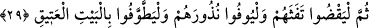

zenginliği olmayan yoksulluğun zayıf düşürdüğü kimsedir. Ya da “
” ihtiyaç sahibi
olduğu elbisesinde ve yüzünde görünen kimsedir, “
” ise böyle değildir. Çünkü onun
elbisesi temiz/düzgün, yüzü de zengin kimsenin yüzü gibidir.
Muhtasaru’l-Kerhî’de der ki: “Bir kimse malının üçte birini bâis, fakir ve miskîne
vasiyet ettiğinde vasiyet edilen bu mal üç parçaya bölünür. Bir parçası bâise, yâni
ihtiyaç sâhibi, müzmin durumda olan kimseyedir. Bir parçası fakîre, yâni kapı kapı
dolaşmayan muhtâca verilir. Bir parçası da miskîne, yâni isteyen ve kapı kapı dolaşan
muhtâca verilir. Ebû Yûsuf’a göre vasiyet edilen mal, iki parçaya ayrılır. Fakir ve
miskîne bir parçası verilir.”
Âlimler, eğer nâfile ise hac kurbanından (hedy) onu kurban eden kimsenin
yiyebileceğinde ittifak etmiştir. Nâfile kurban da böyledir. Çünkü rivâyet edildiğine
göre Hz. Peygamber (a.s.) Vedâ Haccı’nda yüz dişi deve sevketmiş, ömrünün süresine
işâret olmak üzere altmış üç tanesini bizzat kendisi kurban etmiştir. Kalanlarını da Ali
(r.a.) kesmiştir. Sonra Rasûlullah (s.a.) her kurbandan bir mikdar alınıp tencereye
konulmasını emir buyurdu. Böyle de yapıldı. Etler pişirildi. İkisi de bu etten yediler ve
suyunu içtiler. Bunlar tatavvu kurbanı idi.
Temettu, kıran, adaklar ve kefâretler için kesilen kurbanlar; eksikleri tamamlamak
üzere kesilen kurbanlar; haccın ifsâdı, kaçırılması ve avlanma cezâsı olarak vacib olan
kurbanlar gibi hac kurbanlarını kurban eden kimselerin yemesinin câiz olup olmadığı
konusunda âlimler ihtilaf etmişlerdir. Bir grup kurban eden kimsenin bu kurbanlardan
bir şey yemesinin câiz olmadığı görüşüne varmıştır. İmam Şâfiî bu görüşte
olanlardandır. Hanefî imamlar ise kıran ve temettu kurbanlarından kesen kimsenin
yiyebileceği görüşündedirler. Çünkü bu ikisi cinâyet değil, şükür kurbanıdır. Ancak
bunlardan başka vâcib kurbanlardan yiyemez. Aynı şekilde çocukları, âilesi, köleleri ve
câriyeleri, kezâ zenginler bu kurbanlardan yiyemez. Çünkü vâcib olan sadaka, fakirlerin
hakkıdır.
Âyette zenginlerin gerek yiyeceklerde ve gerekse içeceklerde fakirleri kendilerine
ortak etmeleri, onlara ancak kendi yediklerinden yedirmeleri ve hoşlanmayacakları
şeyleri Allah için vermemeleri gerektiğine işâret vardır.
İbn Atâ der ki: “
”, kendisiyle beraber oturmaktan ve yemekten hoşlanmadığın
kimsedir. “
” ise istemediği halde senin yiyeceğine muhtaç olduğunu bildiğin
kimsedir.”
29. Sonra kirlerini gidersinler; adaklarını yerine getirsinler ve o Eski Ev’i
(Kâbe’yi) tavaf etsinler.
“Sonra kirlerini gidersinler” yâni ihramdan çıkarken başı tıraş etmek, bıyığı